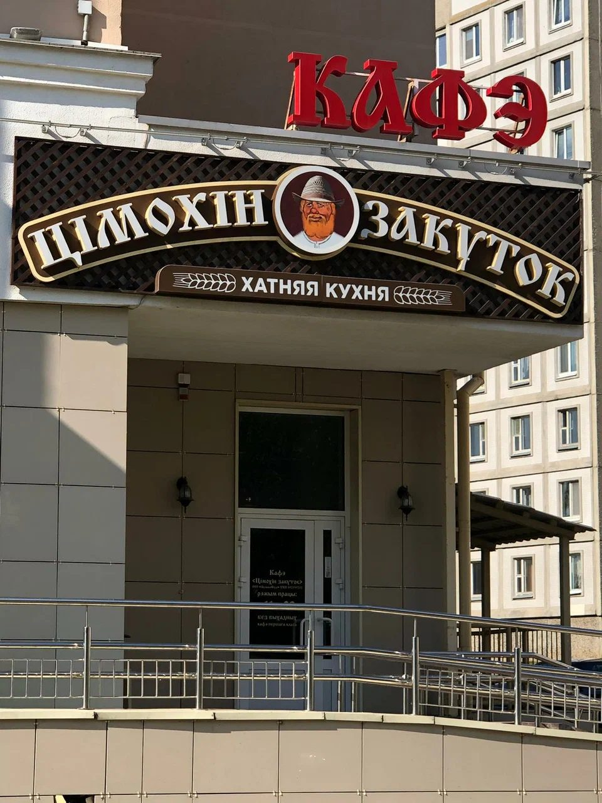

О нас
Закуток с хатняй кухней
Вывеска говорит сама за себя: «Хатняя кухня». Внутри дерево, мягкие диваны и еда, которую хочется разделить на компанию.

Вывеска на решётке
Тёмная деревянная решётка, золотистые объёмные буквы, медальон с лицом бородатого хозяина закутка и красное слово «КАФЭ» над входом. На двери висит табличка с режимом работы: без выходных.
Зал
Тёмные деревянные панели, диваны с мягкой обивкой, льняные шторы, кресла с полосатым орнаментом и барная стойка с лампами. Дерево на полу и потолке.


Что на столе
Борщ, солянка, драники с мачанкой, шкварками и семгой, скаблянка с говядиной или курицей, рулька в глазури.